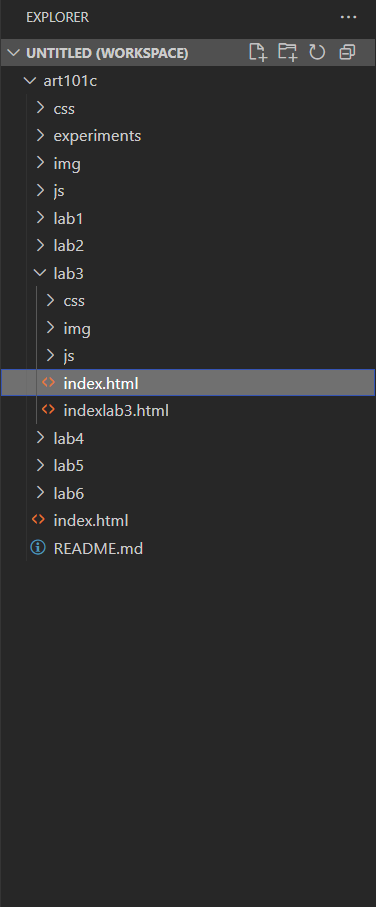
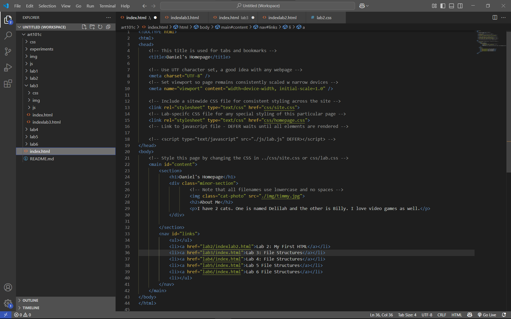
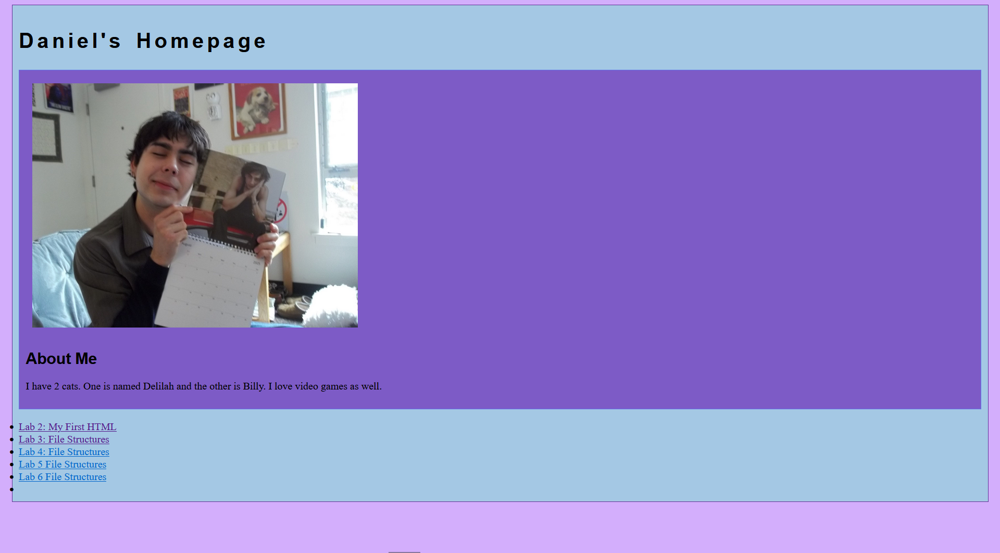
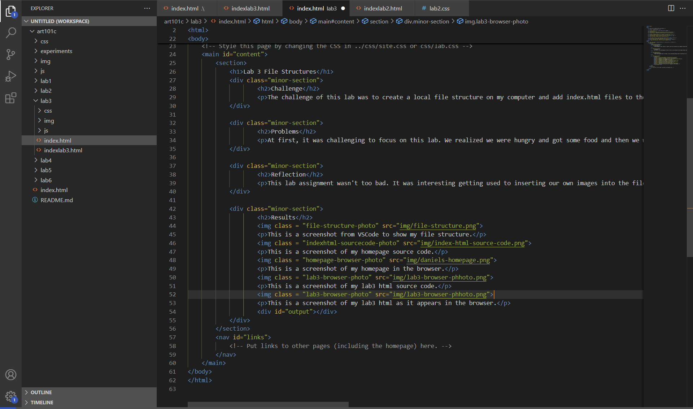
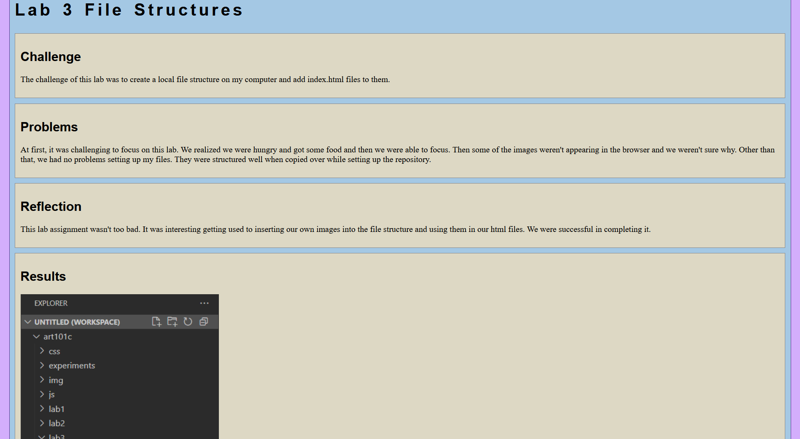

Lab 3 File Structures
Challenge
The challenge of this lab was to create a local file structure on my computer and add index.html files to them.
Problems
At first, it was challenging to focus on this lab. We realized we were hungry and got some food and then we were able to focus. During the actual lab assignment, some of the images weren't appearing in the browser and we weren't sure why at first. We realized we were linking the wrong address for the image file. Other than that, we had no problems setting up the files. They were already structured well when copied over in setting up the repository.
Reflection
This lab assignment wasn't too bad. It was interesting getting used to inserting our own images into the file structure and using them in our html files. We were successful in completing it.
Results
This is a screenshot from VSCode to show my file structure.
This is a screenshot of my homepage source code.
This is a screenshot of my homepage in the browser.
This is a screenshot of my lab 3 html source code.
This is a screenshot of my lab 3 html as it appears in the browser.